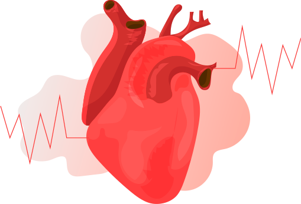

ABP051

Correttore
della pressione alta
Liberatevi dell’ipertensione facilmente
-
Corregge
la pressione arteriosa
-
Migliora
il sonno ed il benessere
-
Stabilizza
le condizioni emotive
-
Stabilizza
il funzionamento del sistema cardiovascolare
-
Aumenta
la produttività

Efficacia
confermata da studi clinici

Apparato registrato come medicinale